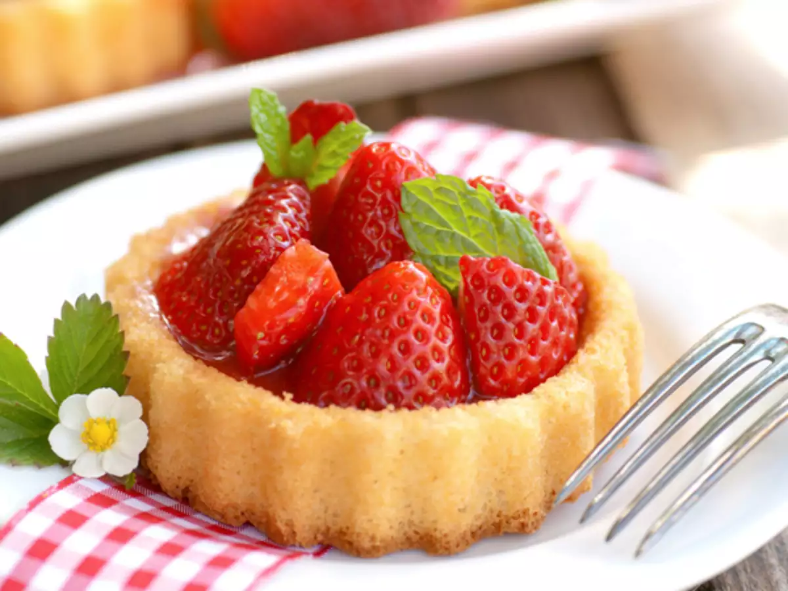

Strawberry Tarts Recipe

Description
This free-form glazed strawberry tart in a butter-crust pastry is thickly glossed and beautiful. You can use a tart pan, but going
free-form is kind of fun.
Be sure to use perfectly ripe, sweet strawberries.
Ingredients
- 1 (8 ounce) ball sweet pastry dough
Sweet Cheese Mixture
- 1 (8 ounce) package cream cheese, room temperature
- 2 tablespoons crème fraîche
- 2 tablespoons crème fraîche
- 1 large egg yolk
- ¼ teaspoon salt
- ¼ teaspoon vanilla extract
- ½ teaspoon grated lemon zest
Strawberries:
- 1 pound fresh ripe strawberries, hulled, halved
Glaze::
- ¼ cup apricot jam
- 2 teaspoons water
Directions
- Preheat the oven to 375 degrees F (190 degrees C). Line a baking sheet with parchment paper.
- Place pastry dough on a lightly floured work surface. Roll out dough to a round disk about 1/8-inch thick and 12 inches in diameter. Transfer to the prepared baking sheet.
- Brush outside 2 inches around the edges of circle lightly with water. Tightly curl up a bit of the edge of dough to give it a rounder shape with a slightly thickened edge. If some edges are thicker than others, pinch off excess and add to thinner edges forming a circle with even edges. Roll each
edge again just once to make the edges thick enough to crimp. Crimp crust with your floured fingers.
- Use a fork to "dock" dough's bottom surface, covering it with tiny holes to prevent dough from bubbling up as it bakes.
- Bake in the preheated oven until golden brown, 20 to 25 minutes. Let cool about 10 minutes. Do not turn off the oven.
- Place cream cheese, crème fraîche, sugar, egg yolk, salt, vanilla, and lemon zest in a mixing bowl. Mix together thoroughly. Carefully pour a
thin layer of mixture evenly into pastry shell (you may not need all the cheese mixture).
- Transfer filled tart to the oven. Bake until cheese layer is set and crust is browned, about 20 minutes. Let tart cool completely to room temperature before adding berries.
- Arrange berries cut side down, pointy end out starting with the larger berries around the edges. You can lean strawberries up a bit as your work your way toward the center.
Cut some berry halves in half again to fit into any gaps on cheese layer.
- Place apricot jam and 2 teaspoons water in a saucepan. Heat over low heat until thin enough to brush. Let cool slightly before brushing
generously over all berries and crust. Transfer tart to a serving plate.